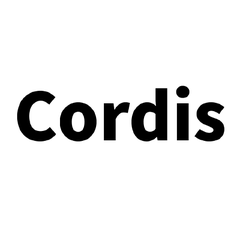
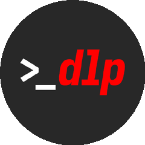

GitHub 今日榜首
不写代码
冲上
46万★
单日再涨 +1588
#01
免费资源清单
免费API全收录
public-apis / public-apis
全网免费接口整理成一份清单，天气、翻译、地图，翻它就能找到
单日 +1588 · 今日榜首
46万星
纯清单
免费接口
找接口不用大海捞针
#02
前端元框架
插件化造框架
cordiverse / cordis

上下文、插件、作用域全做成可拆装的零件，随组随拆
单日 +720 · 爆发级涨幅
元框架
全插件化
Node生态
框架零件随拆随组
#03
AI 短视频生成
一键出短视频
harry0703 / MoneyPrinterTurbo

关键词进去，文案、配音、字幕自动出来，一条内容流水线
单日 +494 · 十万人收藏
关键词进
成片出
全自动
内容流水线一个人跑
#04
命令行音视频工具
命令行管音视频
yt-dlp / yt-dlp

没界面不追风口，纯命令行音视频工具，五年还在稳定更新
单日 +216 · 五年常青
18万星
常青树
全平台
没界面的常青树
100m80m60m40m20m
#05
时序预测模型
时序预测开箱用
google-research / timesfm
研究团队开源的时序预测模型，销量流量数据拿去就能出预测
单日 +109 · 研究团队出品
预训练
时序预测
开箱微调
预测不再靠拍脑袋
今日五个项目
你会收藏哪个？
01public-apis免费API全收录
02cordis插件化造框架
03MoneyPrinterTurbo一键出短视频
04yt-dlp命令行管音视频
05timesfm时序预测开箱用
关注 GitHub星探 · 下期见